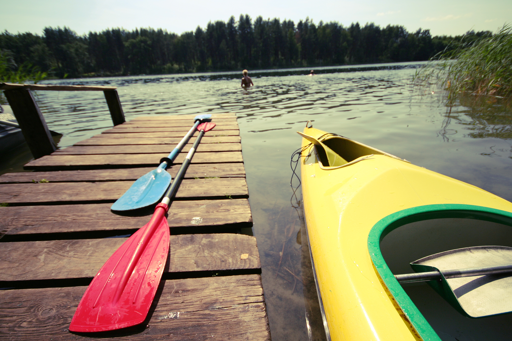

Safety Measures

Camping is a fun way to get family and friends together to enjoy the outdoors. Always be prepared for the unexpected. Do not take unnecessary chances. Do not be careless. Think before you act. Be prepared to administer basic first aid. The most effective way to prevent mishaps is to adequately prepare for the trip. Knowledge of the area, weather, terrain, limitations of your body can help to ensure a safe and enjoyable trip.
| General Tips | Trail Tips | Camping Tips | Trekking Tips | Ziplining Tips |
| Kayak, Canoeing and Rafting Tips | If you get LOST | Check list | First Aid Kit |
Kayaking, Canoeing and Rafting Tips

As with all recreational activities, there is always the possibility of injury or death. Always use common sense and follow all safety rules at all times.
-
- Be aware of weather conditions and water temperature. Prepare for changes in weather and the possibility of a capsize. If paddling in cold water, a wet suit or dry suit can keep you warm and comfortable. In warm weather, a long sleeve shirt can provide sun protection.
- Invest in appropriate clothing for your climate. One advantage of sit-inside kayaks is that you can shield yourself from some of the elements, while sit-on-tops leave you more exposed. Dress for the day.
- Beware of off-shore winds that make it difficult to return to shore.
- Always follow the boating rules of the area you're in.
- Never mix alcohol or drugs (prescription or non-prescription) with boating.
- Never exceed the weight capacity of your boat and always check your equipment for wear and tear before you paddle.
- Seek qualified instruction to learn proper paddling techniques, water safety and basic first aid.
- Brush up on self-rescue first in calm, warm, shallow water, and again in more extreme conditions.
- Most importantly, WEAR YOUR PERSONAL FLOATATION DEVICE. Coast Guard regulations require that all kayaks have a lifejacket on board. Wearing your lifejacket will help keep your head above water and add insulation to your body, keeping you warmer in cold water. There are great PFDs designed specifically for paddlers. Buy one that fits well, and always wear it while you paddle.
- Tell someone your paddle plan, which includes: where you are going, what you will be doing, how long you expect to be gone and how many people are in your party. Then stick to your plan.
- Paddling in the surf zone or in rivers can be dangerous. Always wear a helmet.
- Stay hydrated. Always bring plenty of water and food.
- When paddling in a new area, check with the locals regarding currents, shoreline conditions and weather patterns. Plan an "escape" route - an alternative place to get off the water should environmental conditions dictate it. Abiding by these rules will help to make your kayak adventure safer and fun.